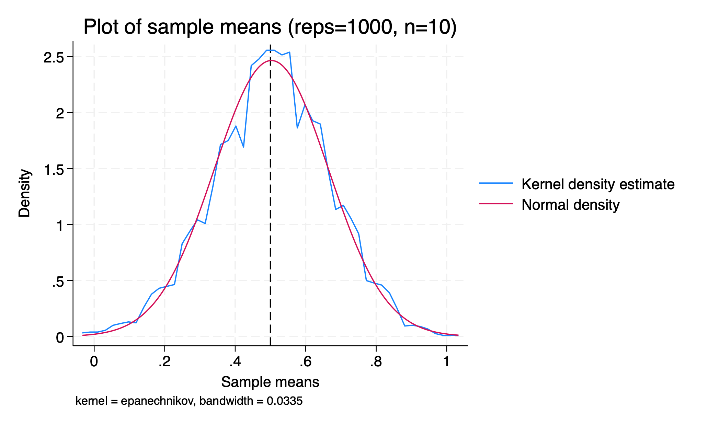
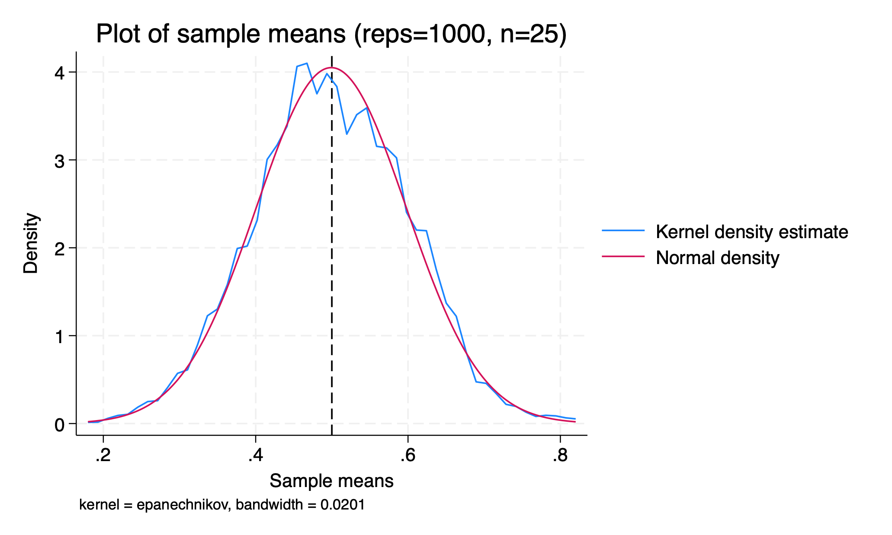
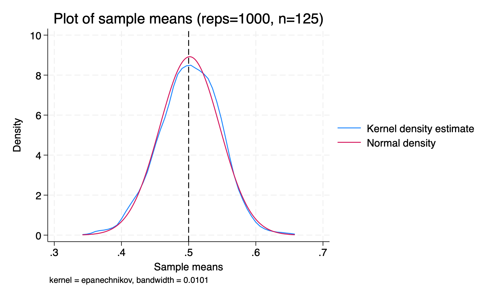

clear
set seed 1234
cap pr drop nsim
pr def nsim, rclass
syntax [, obs(int 1)]
drop _all
set obs `obs'
tempvar z
g `z' = runiformint(0,1) // fair coin toss
qui su `z'
ret sca mean = `r(mean)'
end
foreach i of numlist 10 25 125 {
qui simulate mean=r(mean), reps(1000): nsim, obs(`i')
la var mean "Sample means"
kdensity mean, normal xline(0.5) ///
title("Plot of sample means (reps=1000, n=`i')")
gr export L3_n`i'.png, replace
}ECN 102: Analysis of Economics Data
Chapter 3: The Sample Mean
Remy Beauregard
Random Variables
Overview
We previously discussed the sample mean, \(\bar{x}\), but different samples of data may give us different sample means due to randomness in the data. How can we use the sample mean to say something substantive about the larger population?
Defining Random Variables
We call a variable a random variable (r.v.) if its outcome will be determined by some uncertain, probabilistic, or stochastic process.
A random variable \(X\) (big) could be whether a flipped coin lands heads or tails; \(x\) (little) is each potential outcome value \(X\) could take. For the coin, \[X=\begin{cases} X=H & \Pr(X=H) = 0.5 \\ X=T & \Pr(X=T) = 0.5 \end{cases}\]
We say \(\Pr(X=x)\) for the chance our r.v. \(X\) takes value \(x\).
Expected Value
We can summarize a random variable just like any other variable, to say something about its central tendency and spread. For a probabilistic r.v., its expected value is the probability-weighted average of all possible values \(x\) our variable \(X\) may take.
This expected value will be the population mean of our r.v. For a discrete r.v., we compute expected value using a sum1: \[\mu\equiv E[X] = \sum_x x\cdot\Pr(X=x)\]
As with all probabilistic outcome spaces, we must ensure that our probabilities for all possible values of \(X\) sum to 1.
Variance and Standard Deviation
We can also compute a measure of spread for a r.v., the expected value of squared deviations from our population mean. We denote this variance \[\sigma^2=E[(X-\mu)^2]\] and standard deviation \[\sigma=\sqrt{\sigma^2} = \sqrt{E[(X-\mu)^2]}\]
To compute this, we again use the probability \(\Pr(X=x)\) for each value of \(X\): \[\sigma^2=\sum_x (x-\mu)^2\cdot\Pr(X=x)\] To do this, we first need to compute \(\mu\).
Example: Computing Mean and Variance
An example: Given an \(X\): \[X=\begin{cases} 0 & 0.1 \\ 2 & 0.5 \\ 3 & 0.3 \\ 4 & 0.1 \end{cases}\] we could compute \(\mu\), \(\sigma^2\), and \(\sigma\). What is this r.v. \(X\) in words?
X is a r.v. that takes value 0 with 10% chance, 2 with 50% chance, 3 with 30% chance, and 4 with 10% chance.
Properties of Expectation and Variance
We have some properties that help us evaluate the mean and variance of a r.v. \(X\) transformed with \(a + bX\).
\(E[a+bX]=a + b\times E[X]\)
\(Var[a+bX]=b^2\times Var[X]\)
\(Var[X+Y]=Var[X]+Var[Y]\) if \(X\) and \(Y\) are independent
As we can see, adding or subtracting a constant \(a\) from a r.v. changes its measure of central tendency but not its measure of spread, while multiplying a r.v. by a constant \(b\) changes both measures. We will need these properties later for our proofs.
Random Samples
From Sample to Sample Mean
If we have a r.v. \(X\), we can take a random sample of that variable of size \(n\). This will contain \(n\) realizations of our r.v. \(X\), and any summary statistics we compute for this sample will themselves be random variables.
We previously computed \(\bar{x}\), the sample mean for a given sample of \(X\). However, we could have drawn a different sample and computed a different sample mean, so our sample mean itself is a r.v. \(\bar{X}\). \(\bar{x}\) is a realization of \(\bar{X}\).
Sample Variance as a Random Variable
Similarly, the variance (or standard deviation) we computed for our sample, \(s^2\), is also dependent on the random sample of \(X\) we draw. Like the sample mean \(\bar{x}\), each \(s^2\) we compute from our data is a realization of the r.v. for the sample variance, \(S^2\).
When we compute \(s^2\), we cannot do so directly. First, we must compute \(\bar{x}\) from our data and then include that computed statistic in our formula \(s^2=\frac{1}{n-1}\sum_{i=1}^n(x_i-\boldsymbol{\bar{x}})^2\). Since we use one statistic already computed from our data in the formula for \(s^2\), we must subtract one degree of freedom from our number of observations: \[s^2=\frac{1}{\boldsymbol{n-1}}\sum_{i=1}^n(x_i-\bar{x})^2\]
Distribution of Sample Means
Our r.v. \(X\) may not be (and often is not) normally distributed. However, something quite magical happens to the distribution of sample means when our sample is big enough.
Note: we are not talking about the individual realizations of \(X\) in each sample, but instead the measure of central tendency \(\bar{x}\) for each sample.
Let’s simulate 1000 draws of increasingly large samples of fair coin tosses, with a 50% chance of heads or tails.
Stata: Simulating Coin Toss Sample Means
A peak under the hood of our simulation:
Sample Means with n = 10

Kernel density of 1000 sample means from fair coin tosses with n = 10.
Sample Means with n = 25

Kernel density of 1000 sample means from fair coin tosses with n = 25.
Sample Means with n = 125

Kernel density of 1000 sample means from fair coin tosses with n = 125.
Central Limit Theorem: Intuition
What is happening?
\(\Rightarrow\) Our distribution of sample means is looking more and more normal as we simulate larger samples of random coin tosses. Our coin toss r.v. is definitely not normally distributed, but the distribution of its sample means appears to be as \(n\rightarrow\infty\).
Note: \(n\) here refers to the sample size (10, 25, 125), NOT the number of repetitions (always 1000).
\(\Rightarrow\) In addition, the average of our sample means (\(\mu_{\bar{X}}\)) appears to be roughly equal to the average of our coin toss r.v., \(\mu=0.5\)1.
Assumptions: Simple Random Samples
Let us place some formal structure on our discussion of our r.v. \(X\):
\(X_i\) has a common mean \(\mu:E[X_i]=\mu\) for all \(i\)
\(X_i\) has a common variance \(\sigma^2:Var[X_i]=\sigma^2\) for all \(i\)
Different realizations of \(X\) do not influence each other; \(X_i\) is statistically independent of \(X_j\) for all \(i\neq j\)
Together, these imply that \(X\sim(\mu,\sigma^2)\), where \(\sim\) is read as “is distributed with”; X is a random variable distributed with population mean \(\mu\) and population variance \(\sigma^2\). We call samples with these properties (simple) random samples.
Mean of the Sample Mean
The population mean of the sample mean \(\bar{X}\) is: \[\mu_{\bar{X}}\equiv E[\bar{X}] = \mu\] Proof:
\[\mu_{\bar{X}} = E[\bar{X}] = E\left[\frac{1}{n}\sum_{i=1}^n X_i\right] = \frac{1}{n}\sum_{i=1}^n E[X_i] = \frac{1}{n}\sum_{i=1}^n \mu = \frac{n\mu}{n} = \mu\]
Variance of the Sample Mean
The population variance of the sample mean \(\bar{X}\) is: \[\sigma^2_{\bar{X}}=Var[\bar{X}] \equiv E[(\bar{X}-\mu_{\bar{X}})^2]=\frac{\sigma^2}{n}\]
Proof:
\[\begin{aligned} \sigma^2_{\bar{X}} &= \text{Var}[\bar{X}] = \text{Var}\left[\frac{1}{n}\sum_{i=1}^n X_i\right] \\ &= \frac{1}{n^2}\sum_{i=1}^n \text{Var}[X_i] = \frac{1}{n^2}\sum_{i=1}^n \sigma^2 = \frac{n\sigma^2}{n^2} = \frac{\sigma^2}{n} \end{aligned}\]
Standard Deviation of the Sample Mean
Thus, the standard deviation of the sample mean is given by: \[\sigma_{\bar{X}}\equiv\sqrt{\frac{\sigma^2}{n}}=\frac{\sigma}{\sqrt{n}}\]
This quantity represents the spread of our sample means for a given sample size \(n\), our precision in estimating our sample mean.
We can see that larger samples mechanically lead to greater precision in estimating \(\mu\): \(\sigma_{\bar{X}}\rightarrow0\) as \(n\rightarrow\infty\).
Characterizing the Sample Mean
So far, we have shown that \(\bar{X}\sim(\mu,\frac{\sigma^2}{n})\) or that:
“X-bar is a random variable distributed with population mean \(\mu\) and population variance \(\sigma^2/n\)”.
We need one more result to complete our characterization of \(\bar{X}\).
The Central Limit Theorem
Using the central limit theorem, we can say that \(\bar{X}\) will be approximately normally distributed whenever \(n>30\). Note, this is the sample size, not the number of resamplings we do.
With the CLT, we now have that \(\bar{X}\sim N(\mu,\frac{\sigma^2}{n})\).
We say that \(\bar{X}\) is asymptotically normally distributed since its distribution becomes normal as \(n\rightarrow\infty\).
Standardizing the Sample Mean
Finally, we can standardize \(\bar{X}\) to turn it into a z-score. Since \(\bar{X}\) is normally distributed by the CLT when \(n>30\), this will be a standard normal distribution.
\[Z=\frac{\bar{X}-\mu}{\sigma/\sqrt{n}}\sim N(0,1)\]
“Standard” means we have mean 0 and variance 1
“Normal” means our distribution is perfectly symmetric (skew=0) and has kurtosis of exactly 3
The standard normal distribution is well-understood, making it easy to conduct statistical tests
Estimating Population Variance
For a given sample, however, we are unlikely to know our population variance \(\sigma^2\) from a single sample. Instead, we can replace \(\sigma^2\) with \(s^2\), the sample estimate of variance.
This is given by: \[s_{\bar{X}}^2=\frac{s^2}{n} = \frac{\frac{1}{n-1}\sum_i(x_i-\bar{x})^2}{n}\]
The Standard Error
Similarly, we can take \[s_{\bar{X}}=\frac{\sqrt{s^2}}{\sqrt{n}} = \frac{\sqrt{\frac{1}{n-1}\sum_i(x_i-\bar{x})^2}}{\sqrt{n}}\]
Since this is no longer the standard deviation of the sample mean, we give this quantity a new name: the standard error of \(\bar{X}\). We are able to calculate this quantity using only sample statistics from our given dataset (no \(\mu\) or \(\sigma^2\) here).
Revisiting the Assumptions
All of the above identities rely on the three previous assumptions:
Common mean
Common variance
Independence of observations
Later, we will relax these assumptions.
Sample Representativeness and Weights
So far, we have implicitly assumed that our samples are representative of our population — they are simple random samples. However, we may encounter instances where our sample is not representative of the broader population. In these cases, sample statistics derived from biased samples will lead to improper estimations of population parameters.
\(\Rightarrow\) What can be done? One common solution is to use sample weights, quantities to increase or decrease how represented a given value is in a sample when estimating a population. For example, we could weight all observations in the sample by some probability \(p\) that such a value appears in the sample.
Estimators
What Is an Estimator?
In the cases above, we have been estimating the population mean \(\mu\) with the sample mean \(\bar{X}\), as we do not know the true value of the former (We also estimated \(\sigma\) with \(s\)). We want to think about properties of a good estimator that will lead us to a proper conjecture about the true (unknown) population parameter.
Unbiasedness
One such property is unbiasedness: the expected value of an estimator is equal to the population parameter.
We have shown that \(\bar{X}\) is an unbiased estimator for \(\mu\) since \[E[\bar{X}]=\mu\]
Visualizing Bias

Figure 1: Sampling distributions of a biased and an unbiased estimator for a population mean \(\mu\). The unbiased estimator (solid blue) is centered on \(\mu\); the biased estimator (dashed orange) is systematically shifted away from \(\mu\).
Consistency
Another property is consistency: the estimator gets closer and closer to the true parameter value as \(n\rightarrow\infty\) and the variance of the estimator shrinks to zero.
We have also shown that \(\bar{X}\rightarrow\mu\) and \(\frac{\sigma^2}{n}\rightarrow0\) as \(n\rightarrow\infty\).
Thus, our estimator \(\bar{X}\) for \(\mu\) is both unbiased and consistent.
Minimum Variance
We may have many unbiased estimators to choose from. A way to further narrow down this list is to designate the best estimator as that with the minimum variance. We have shown what the population variance is for \(\bar{X}\), but we have not shown it to be the minimum variance for all possible estimators of \(\mu\).
End of Lecture Material
Knowledge Check 3
Suppose \(Y\sim(10,25)\) with \(\bar{Y}\) as the sample mean for \(n=55\).
Describe in words how \(Y\) is distributed.
What do you expect the mean of \(\bar{Y}\) to be?
What do you expect the variance of \(\bar{Y}\) to be?
How do you expect \(\bar{Y}\) to be distributed? Explain.
Complete the identity \(\bar{Y}\sim\_\_(\_\_,\_\_)\)